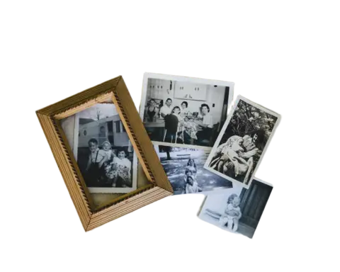
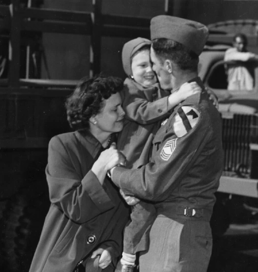
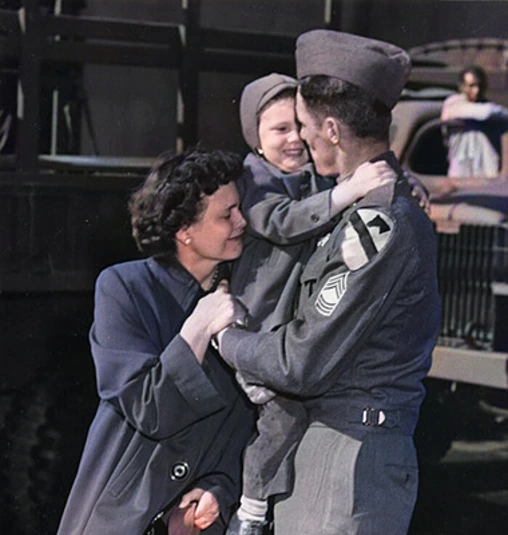

Don't Let Your
Family's Memories
Fade.
We are a local in-home service that safely scans and digitizes your most precious photos, ensuring they are preserved for generations to come.

See How We Preserve Your Memories
Demonstration video showing our professional photo preservation process from start to finish
Simple, Transparent Pricing
Legacy Package
$849
Professional In-Home Photo Scanning
- Up to 10,000 Photos
- All work done safely in your home
- No photos ever leave your house
- Family Photo Archvie Website
- Digital Frame
- USB Drive
- Long-term Storage
Heirloom Package
$449
Professional Pickup & Delivery Photo Scanning
- Up to 10,000 Photos
- Full-Service Pickup and Delivery
- No photos ever leave our care
- Digital Frame
- USB Drive
- Long-term Storage
Memory Package
$199
Professional Pickup & Delivery Photo Scanning
- Up to 5,000 Photos
- Full-Service Pickup and Delivery
- No photos ever leave our care
- USB Drive
- Long-term Storage
Experience old photographs come to life!
Turn back time and see your treasured memories in vivid motion.
Our Photo Preservation Services

In-Home
In-Home
Scanning

Enhance &
Enhance &
Colorize
Demonstration of converting still photographs into dynamic video presentations with movement and effects
Turn Photos
into Videos
LIMITED TIME
Try Our Service Risk-Free!
$50
50 Scans + USB Drive
Perfect way to test our professional scanning service with no commitment. See the quality for yourself!
- Professional High-Resolution Scans
- Convenient USB Drive Included
- No Hidden Fees or Commitments
Claim This Deal Now!
📞 Call (908) 955-3902 Today
Additional Services We Offer
- Digital Frames
- Family Websites
- USB Drives
- Long-term Storage
- Turn Photos Into Videos
- All Scanning Done In-Home, No Photos Leave Your House
Family Photo Archive Website
Create a private family website to organize, preserve, and share your digitized photos with loved ones.
- Private family photo archive accessible anywhere
- Organize photos by decade, event, or family member
- Share memories securely with family worldwide
- Search and discover forgotten treasures
- Download high-resolution copies anytime
- Preserve family stories alongside photos
Ready to Preserve Your Legacy?
Book Your In-Home Photo Scan Now!
Call or Text Any Time: (908) 955-3902
www.denvillephotopreservation.com